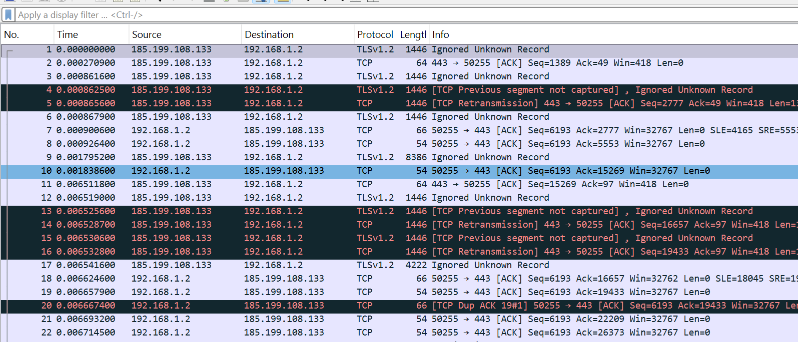
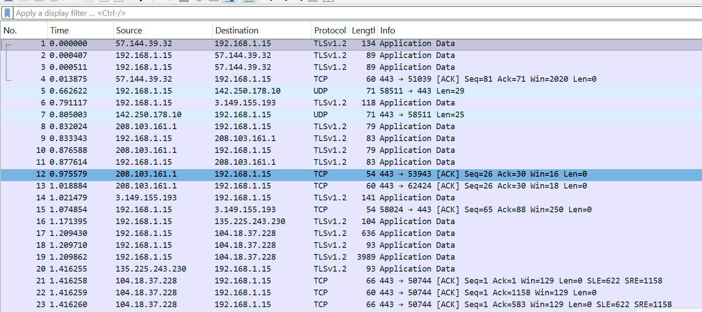

Quick answer
Where do I find total packets and capture duration?
Open Statistics → Capture File Properties. That window reports the capture file, elapsed duration, file size, total captured packets, displayed packets, marked packets, dropped packets when available, and other capture details. For a quick glance, the status bar at the bottom of the main window also shows packet totals and the number currently displayed.
If a display filter is active, displayed packets may be lower than captured packets. The packets have not been deleted. The filter only changes what you can see.
Capture files can contain addresses, hostnames, session details, and application data. Use your own lab, an approved training file, or a network for which you have written permission. Store captures securely, share only what is necessary, and remove sensitive material before publishing screenshots or reports.
1. Learn the workspace before reading packets
Wireshark becomes much easier when you separate the launch screen from the analysis workspace. On launch, the interface helps you open a saved capture or choose a network interface for live capture. After a file is opened or traffic is recorded, the center of the application changes into a three-pane analysis workspace.
.pcap or .pcapng file for analysis.The activity graph helps identify which interface is carrying traffic. An interface name alone is not enough: confirm that the adapter belongs to the approved capture scope before starting.
Opening a file and capturing live traffic are different
Opening a saved capture lets you analyse packets that already exist. It is the best starting point for a beginner because every learner can inspect the same evidence and repeat the same steps. Starting a live capture records new traffic from a selected interface until you stop it. A capture filter can restrict what is recorded, but a mistake at this stage may omit evidence that cannot be recovered from that session.
Start with an approved saved capture. Learn the panes, filters, statistics, and reporting process first. Move to live capture only after you understand interface selection, permission, storage, and scope.
2. Understand the three packet panes
When a capture is open, Wireshark presents the same packet at three levels. Selecting a row in the upper pane controls the information shown below it.
- Packet List: one summary row per packet, usually showing number, time, source, destination, protocol, length, and a plain-language Info field.
- Packet Details: an expandable protocol tree. A typical web packet may contain frame, Ethernet, Internet Protocol, TCP or UDP, and an application protocol such as TLS or DNS.
- Packet Bytes: the exact hexadecimal bytes and a text representation. Selecting a field in the details tree highlights the bytes that produced it.

How to explain one packet row
A useful beginner explanation answers five questions in order: When did the packet appear? Which endpoint sent it? Which endpoint received it? Which protocol carried it? What event does the Info column describe? Then open the details pane to verify the summary.
For a TCP row, the Info field may show source and destination ports, flags such as SYN, ACK, FIN, or RST, sequence and acknowledgement values, window size, and payload length. A retransmission label means Wireshark observed data that appears to have been sent again. It may indicate packet loss or delay, but one labelled row does not by itself prove the cause.
3. Recognise the protocols beginners see most often
| Protocol | What it does | What to inspect first |
|---|---|---|
| ARP | Maps a local IPv4 address to a hardware address. | Who is asking, which address is requested, and whether a reply follows. |
| DNS | Translates names into addresses and returns other domain records. | Query name, record type, response code, answer, and timing. |
| ICMP | Carries network control and diagnostic messages. | Message type, code, request/reply pairing, and errors. |
| TCP | Provides connection-oriented, ordered delivery. | Endpoints, ports, flags, sequence flow, acknowledgements, and retransmissions. |
| UDP | Provides connectionless datagrams with low protocol overhead. | Endpoints, ports, request/response pattern, and application protocol. |
| TLS | Protects application data in transit. | Handshake messages, server name when available, version, alerts, and timing. |
| QUIC | Carries secure multiplexed connections over UDP and is used by HTTP/3. | Connection flow, UDP endpoints, handshake progress, and loss or timing patterns. |
Private IPv4 addresses such as 10.0.0.0/8, 172.16.0.0/12, and 192.168.0.0/16 identify hosts inside private networks. Ethernet addresses describe devices on the local link, while IP addresses describe logical endpoints across networks. Ports identify the application conversation on an endpoint.
4. Use display filters without losing evidence
A display filter changes the packet rows visible in the current view. It does not rewrite the capture file. Type a filter in the display filter bar and press Enter or choose Apply. If the expression is invalid, Wireshark marks the field accordingly. Clear the filter to return to the full capture.
tcpShow TCP packetsudpShow UDP packetsdnsShow DNS trafficarpShow ARP trafficicmpShow ICMP traffictlsShow TLS trafficquicShow QUIC traffictcp.port == 443TCP where either port is 443ip.addr == 192.168.1.15Traffic to or from one IPv4 addressip.src == 192.168.1.15Packets sent by one IPv4 addressip.dst == 192.168.1.15Packets received by one IPv4 addressdns or tlsEither DNS or TLS traffic(ip.addr == 192.168.1.15) and (tcp.port == 443 or udp.port == 443)This combined filter limits the view to one host communicating on TCP or UDP port 443. Parentheses make the intended logic explicit. Replace the example address with an authorised endpoint from your own lab.
5. Use statistics before scanning hundreds of rows
A reliable first analysis begins with the shape of the capture, not an exciting-looking packet. Record the file, duration, total packets, displayed packets, and capture environment. Then use summaries to decide where deeper inspection is justified.
Confirm duration, packet totals, size, format, interfaces, and comments.
See which protocols are present and their share of packets and bytes.
Identify communicating addresses, ports, packet counts, byte counts, and direction.
Compare packet or byte activity over time and locate bursts or gaps.
Find notable events, then verify each one against context and packet details.
Isolate a selected conversation and view the stream in sequence when the protocol supports it.

Warnings, notes, retransmissions, and colour rules identify evidence worth checking. They do not prove a security incident, a broken server, or a malicious user. Verify timing, protocol behavior, endpoint roles, repeated patterns, and the wider capture before reporting a cause.
6. Complete six practical labs
Launch-screen tour
Identify the menu, toolbar, display filter, open area, capture interfaces, activity graphs, capture-filter field, and status bar. Explain what each area is for.
Deliverable:A labelled screenshot or written workspace map.
Packet count and duration
Open an approved capture and record total packets, displayed packets, duration, file size, and interface information from Capture File Properties.
Deliverable:A five-line capture summary.
Open versus capture
Compare analysing a saved file with recording live traffic. List the permissions, scope decisions, and storage precautions required before live capture.
Deliverable:A short comparison table.
Explain one packet
Choose one row and describe time, direction, endpoints, protocol, length, Info field, and the matching fields in Packet Details.
Deliverable:One evidence-based paragraph.
Filter a question
Apply protocol, address, and port filters. Record total packets before filtering and displayed packets after each filter. Clear the filter between tests.
Deliverable:A filter-and-result table.
Statistics first
Use Protocol Hierarchy, Endpoints, Conversations, I/O Graphs, and Expert Information before selecting two packets for closer inspection.
Deliverable:A brief report with findings, limitations, and next step.
7. Write a defensible beginner analysis report
A strong report separates observations from interpretations. “The capture contains 1,250 packets and 63 percent are TCP” is an observation. “The server is failing” is an interpretation that needs supporting evidence. Use cautious language such as suggests, is consistent with, or requires further verification when the capture cannot establish cause.
JENECONK packet-analysis report template
- Scope and permission
- Who authorised the analysis, what system or lab was included, and what was excluded?
- Capture summary
- Filename, date, duration, packet count, displayed count, file size, and interface.
- Question
- What specific network behavior are you trying to understand?
- Method
- Filters, statistics, streams, endpoints, and packets reviewed.
- Observations
- Measured facts with packet numbers, times, addresses, ports, and protocol details.
- Interpretation
- What the observations may mean, stated with appropriate confidence.
- Limitations
- Missing traffic, encryption, capture position, time window, or evidence not available.
- Next step
- The safest useful action or additional evidence required.
8. Avoid these beginner mistakes
- Capturing without permission: technical ability does not replace authorisation.
- Choosing the busiest interface blindly: confirm that it is the correct approved adapter.
- Confusing capture and display filters: one controls recording; the other controls visibility.
- Reporting visible rows as the total: check captured and displayed counts separately.
- Judging by colour alone: colour rules support scanning but do not establish meaning.
- Calling every retransmission an attack: retransmissions have many possible network causes.
- Reading only the Info column: verify the protocol tree and related packets.
- Publishing raw captures: protect sensitive addresses, identifiers, and application data.
- Ignoring capture position: what Wireshark can observe depends on where traffic was recorded.
- Writing conclusions without limitations: say what the evidence cannot prove.
Frequently asked questions
Where can I find total packets and capture duration?
Use Statistics → Capture File Properties for the complete summary. The status bar provides a quick view, but Capture File Properties is the better source for a written report.
What is the difference between a capture filter and a display filter?
A capture filter limits what Wireshark records during live capture. A display filter limits what you see from packets already captured. Clearing a display filter restores the hidden rows.
Does a red or black packet mean the network was attacked?
No. Colours are generated by configurable rules. They help draw attention to traffic patterns, but the packet details, surrounding conversation, timing, and system context determine what the traffic means.
Can Wireshark read encrypted TLS content?
Wireshark can analyse TLS handshakes and metadata visible in the capture. Decrypting protected application content requires appropriate session keys and authorisation; encrypted payloads are not automatically readable.
Should I start with live capture?
An approved saved capture is usually better for a first lesson. It is repeatable, bounded, and avoids collecting unrelated traffic while you are still learning the interface.
Continue learning
Use the official Wireshark User's Guide for current interface and feature documentation, and the official display-filter reference when building more advanced expressions. Continue through JENECONK's technology resource centre or explore the AI Training Academy for guided learning.
This article and workbook were developed from JENECONK's beginner network-analysis training material. The webpage is the complete public lesson; the downloadable presentation is an optional classroom and offline study companion.